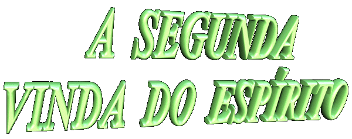

Embora a maioria dos fieis colocam em evidência somente duas Vindas de JESUS: no Nascimento em Belém e na Parusía Final para Julgamento da humanidade, também encontramos nas páginas do Livro da Revelação, de maneira nítida e inconfundível, uma "outra Vinda" , uma "Vinda Intermediária" entre o Nascimento e o Juízo Final, para permitir que o Reino de DEUS, implantado entre nós por JESUS, alcance o brilho e a glória almejada, propiciando a todos, um preâmbulo da verdadeira felicidade que há no Paraíso Divino.
Examinando as citações bíblicas, não é difícil perceber que JESUS ao transmitir seus ensinamentos, delineou também um esboço do acontecimento (da próxima Vinda), mantendo-o misteriosamente oculto por um tempo necessário, porque conhecia o pequeno grau de percepção mental dos Discípulos e porque também, seria parte da missão do ESPÍRITO SANTO, elucidar e esclarecer todas as palavras e fatos evangélicos, no tempo e momento determinados pelo PAI ETERNO:
"Tenho ainda muito a vos dizer, mas não podeis agora compreender. Quando vier o ESPÍRITO DA VERDADE, ELE vos conduzirá à verdade plena, pois não falará de SÍ mesmo, mas dirá tudo o que tiver ouvido e vos anunciará as coisas futuras".( Jo 16,12-13 )
Esta explicação é necessária, considerando que a partir do século XX, o desvario e a alucinação dominou muitas consciências, fazendo nascer o medo, a dúvida e a desesperança, porque centenas de pessoas imaginaram que era eminente a chegada do Fim do Mundo.
Na epístola aos Hebreus ( Hb 9,28 ), São Paulo afirma que CRISTO virá uma "Segunda Vez", não em consequência do pecado, porque já realizou a Obra Redentora, mas para "Salvar" todos aqueles que O amam, que caminham neste vale de lágrimas e aflições, com o coração voltado para ELE, lutando e vencendo os obstáculos do cotidiano e suas próprias limitações e fraquezas, perseverando no caminho do direito, da justiça e do amor fraterno, mantendo viva a chama da esperança. Então, não será uma Vinda para julgar a humanidade, porque isto acontecerá no Juízo Final, mas virá sim, uma "Segunda Vez" , para livrar a humanidade das armadilhas tenebrosas do maligno e salvar todos que procuram ser fiéis, e procuram o seu Divino Amor.
No livro do Apocalipse ( Ap 20,1-3 ) São João afirma que a prisão de Satanás deverá durar mil anos, ou seja, "um longo tempo". Este acontecimento de trancafiar e isolar o demônio, sem dúvida, deverá ocorrer ao longo da história da humanidade, a fim de que as criaturas sejam beneficiadas. Evidentemente, o resultado será "um longo tempo" de paz e felicidade, com as pessoas vivendo harmoniosamente e exercitando em plenitude o Mandamento do Amor.
A maneira que o ESPÍRITO SANTO realizará a exterminação do maligno, varrendo o pecado da face da terra e queimando as suas raízes, é um mistério, e como tal, permanece oculto. Todavia, a imaginação cristã é pródiga e pode suscitar a idéia de que tudo ocorrerá no interior do coração das pessoas, porque é justamente lá que Satanás ergue e constrói as suas fortificações e seus baluartes, estimulando a vaidade, o orgulho, a ambição e toda ação detestável, e assim, é lá também que ele deverá ser derrotado e destruído.
Podemos conjeturar que este acontecimento será mais um precioso fruto do Mistério da Redenção, que se realizará no coração de cada criatura, libertando integralmente a natureza humana do assédio do maligno, porque a Redenção do SENHOR é infinitamente rica em méritos, ela produz o efeito de restabelecer "no Modo ou na Substância", as mesmas condições de vida na Origem, ou seja, infundindo nas pessoas "todas" ou "quase todas" as graças, da mesma maneira como os nossos primeiros pais possuíam antes do Pecado Original.
Assim sendo, a Segunda Vinda de CRISTO concretizará um tempo, durante o qual, a humanidade não sendo mais enganada pelo demônio, viverá em plena obediência ao CRIADOR, com incomparável santidade e tendo a graça de possuir interiormente uma permanente experiência de JESUS e do PAI ETERNO , através de locução e visão interior.
Todavia, não devemos confundir os anúncios sobre a Vinda do SENHOR, procurando entende-los corretamente. Ela acontecerá de fato, contudo através do ESPÍRITO SANTO, porque ELE é o atualizador da Obra Redentora e tem a missão primordial de fazer aparecer todos os "frutos" oriundos do Divino e precioso Sangue de JESUS, para benefício da humanidade. Dessa forma, atuará o ESPÍRITO DE DEUS em evidência, unido e interligado ao PAI ETERNO e ao FILHO, que se manterão presentes por todas as ações benéficas, mas ocultos aparentemente.
Assim sendo, a Vinda Intermediária de CRISTO, anunciada pela Sagrada Escritura, será a Segunda Vinda do ESPÍRITO SANTO em plenitude, que derramará sobre a humanidade "labaredas de fogo" do incandescente Amor Divino, Abençoando, Protegendo e Purificando todas as pessoas, exterminando o pecado e desenraizando o mal que existe no interior dos corações.
Para que as criaturas creiam nesta verdade, é construtivo lembrar a misteriosa palavra de JESUS, diante de sua Paixão:
"EU vim trazer fogo à terra, e como desejaria que já estivesse aceso !"( Lc 12,49 )
A palavra do SENHOR pode ser interpretada de duas maneiras. Dessas, na Primeira consideração podemos extrair duas outras hipóteses alicerçadas na Justiça Divina. Então temos:
Segundo: apresentando uma interpretação conforme a Misericórdia de DEUS:
Em diversas manifestações sobrenaturais ocorridas no século XX, JESUS manifestou aos videntes que ELE "sofre" ao pensar no momento em que terá de enviar o ESPÍRITO SANTO para cumprir a missão de purificar a humanidade, porque ELE sabe que uma maioria vive distante do Divino caminho. Embora desejando ardentemente a salvação de todos os seus filhos, "lembra também que ELE é um DEUS de Justiça e por isso mesmo, terá que ser Juiz da humanidade, para "considerar" todas as formas de rebeliões praticadas contra o seu infinito e misericordioso Amor.
O ESPÍRITO SANTO virá sobre todos, sem exceções, e será como um orvalho benéfico que cobrirá toda a terra. Este acontecimento, cujos prenúncios vemos crescer e intensificar em nossa era através de uma notável "Efusão do ESPÍRITO SANTO", com admiráveis manifestações sobrenaturais ocorrendo em todas as partes do mundo, é também um notável derramamento de graças e carismas, que se caracteriza como o sinalizador da "Segunda Vinda do ESPÍRITO em plenitude", ou simplesmente, como o "Segundo Pentecostes".
 Alguém
poderia perguntar: mas quando começarão acontecer estas
coisas?
Alguém
poderia perguntar: mas quando começarão acontecer estas
coisas?
As palavras de JESUS devem servir de alerta à todos, até para aqueles mais renitentes que não acreditam e nem aceitam a profecia sobre o Final dos Tempos, apesar das evidências:
"Ao entardecer dizeis: Vai fazer bom tempo, porque o Céu está avermelhado; e de manhã: Hoje teremos tempestade, porque o Céu está de um vermelho sombrio. O aspecto do Céu, sabeis interpretar, mas os Sinais dos Tempos não podeis!" (Mt 16,2-3)
Verdadeiramente é suficiente olharmos em frente e ao redor, para enxergarmos o deplorável e desesperador estado espiritual e moral, em que está mergulhada a humanidade. Não há respeito pelas coisas sagradas e nem pelo próprio DEUS. A desinformação é geral e tão grande, que muitas pessoas caminham em plena ignorância de tudo que se refere ao espírito, portando-se como vagas do mar, conduzidas aleatoriamente pelas correntezas marinhas. Este procedimento ainda tem resultado mais tenebroso para alguns, que vão em busca de um DEUS mais fácil nas seitas e em outras religiões, "deixam o Céu por serem impuros e desinformados, e vão ao inferno a procura de Luz". É a "Apostasia" no grau mais elevado que satanicamente traz a "Impiedade" , com todas as formas de violência. E todos nós, constrangidos e cheios de pesar, presenciamos com tristeza tudo isto em nossa atualidade.
Então, sem dúvida, o Tempo é este, porque nele as profecias se confirmam e as predições bíblicas vão-se realizando conforme o anúncio Divino.
Sobre as datas, nada podemos escrever, estão reservadas a Vontade e Infinita Misericórdia do SENHOR:
"Daquele Dia e da Hora, ninguém sabe, nem os Anjos dos Céus, nem o FILHO, mas só o PAI". (Mt 24,36)
"Não vos compete conhecer os Tempos e os Momentos que o PAI reservou a seu poder". (At 1,7)
A data e o tempo são espaços que pertencem ao CRIADOR e são assinalados conforme a Divina Misericórdia, que sempre espera além de um tempo considerado como final, concedendo derradeiras oportunidades de amor à todos os seus filhos, inclusive aqueles que estão mais distantes e que nem merecem ser chamados filhos de DEUS, a fim de que numa última oportunidade, decidam deixar-se inundar pela maravilhosa Luz do ESPÍRITO, arrependam-se da iniquidade e das transgressões cometidas, buscando o refúgio consolador no SAGRADO CORAÇÃO DO ETERNO PAI .